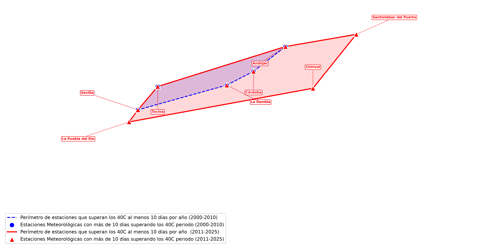

Descripción de la técnica: Esta representación utiliza envolventes convexas (Convex Hull) para comparar la expansión espacial del calor extremo en Andalucía entre dos bloques temporales (2000–2010 vs. 2011–2025). Muestra el perímetro geométrico que delimita las estaciones meteorológicas que han registrado más de 10 días al año superando los 40 °C, evidenciando el avance del impacto térmico hacia nuevas zonas del territorio.
